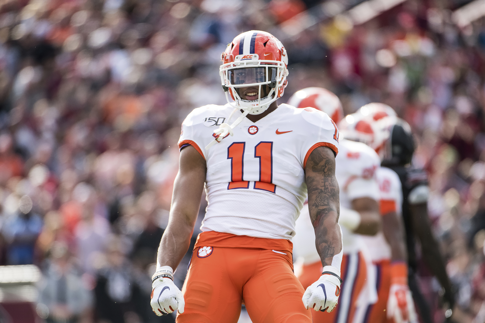
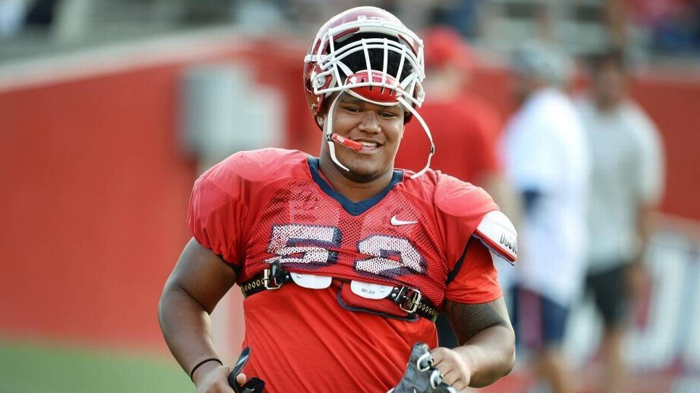

Colten Cowell
Colten Cowell
5/25/2020
Teams With The Best Overall Draft Class
Every year the NFL draft is an event for the ages and this year was no different. Although, the event
was affected by the COVID-19 pandemic, it still provided plenty of entertainment value for the viewers. From the NFL commissioner
annoucing picks from his basement to seeing NFL coaching personnel in their home environment, this will definitely be a draft
that no one will forget. Having said that, the pandemic couldn't change one thing...teams gaining an advantage through the draft
and finding the next superstars to potentially win the ultimate prize, the Vince Lombardi Trophy.
Using FiveThirtyEight's
draft model as a reference, I was able to calculate a team's overall draft score based on a simple formula. The formula is as follows
Actual Draft Position - Projected Draft Position = Delta(Δ). Then, based on the Δ number each player fell into one of the following
categories: Steal (Δ > 10), Slight Steal (5 < Δ < 10), Good Pick (-5 < Δ < 5), Slight Reach (-5 < Δ < -10), and Reach (Δ > -10). Each
category was given a numerical value where a Steal = 10 points, Slight Steal = 3 points, Good Pick = 1 point, Slight Reach = -2 Points,
and Reach = -3 points.
Using my criteria from above, I ranked the top ten overall draft classes from this year's draft. Check out the teams below and see if your
favorite NFL team knocked it out of the park with their picks.
Denver Broncos
Arizona Cardinals

New Orleans Saints
Los Angeles Rams
- CB Bryce Hall, Virginia
- WR K.J. Hill, Ohio State
- DE Curtis Weaver, Boise State
- OT Prince Tega Wanogho, Auburn
- DE Bradlee Anae, Utah
- OG Netane Muti, Fresno State 

Overall Score: 11 points, 1.0 points per pick
Steals: (2) 20 points
(118) TE Albert Okwuegbunam - Δ 21.5
(181) OG Netane Muti - Δ 113.6
Slight Steals: (1) 3 points
(83) C Lloyd Cushenberry III - Δ 9.0
Good Picks: (3) 3 points
(15) WR Jerry Jeudy - Δ 2.3
(252) WR Tyrie Cleveland - Δ -4.0
(254) DE Derrek Tuszka - Δ -2.0
Slight Reachs: (0) 0 points
Reaches: (5) -15 points
(34) WR Michael Pittman Jr. - Δ -29.9
(46) WR KJ Hamler - Δ -16.6
(77) CB Michael Ojemudia - Δ -88.0
(95) DT McTelvin Agim - Δ -161.0
(179) OLB Justin Strnad - Δ -77.0
Overall Score: 12 points, 2.0 points per pick
Steals: (2) 20 points
(72) OT Josh Jones - Δ 41.5
(222) RB Eno Benjamin - Δ 56.8
Slight Steals: (0) 0 points
Good Picks: (1) 1 point
(8) OLB Isaiah Simmons - Δ 2.2
Slight Reaches: (0) 0 points
Reaches: (3) -9 points
(114) DT Leki Fotu - Δ -17.7
(131) DT Rashard Lawrence - Δ -19.3
(202) ILB Evan Weaver - Δ -54.0

Overall Score: 14 points, 3.5 points per pick
Steals:(2) 20 points
(74) OLB Zack Baun - Δ 41.1
(105) TE Adam Trautman - Δ 34.4
Slight Steals:(0) 0 points
Good Picks:(0) 0 points
Slight Reaches:(0) 0 points
Reaches:(2) -6 points
(24) C Cesar Ruiz - Δ -16.2
(240) QB Tommy Stevens - Δ -16.0

Overall Score: 20 points, 2.2 points per pick
Steals: (3) 30 points
(84) OLB Terrell Lewis - Δ 25.8
(104) S Terrell Burgess - Δ 24.6
(136) TE Brycen Hopkins - Δ 53.6
Slight Steals: (1) 3 points
(199) S Jordan Fuller - Δ 7.7
Good Picks: (0) 0 points
Slight Reaches:(2) -4 points
(248) PK Sam Sloman - Δ -8.0
(250) OG Tremayne Anchrum - Δ -6.0
Reaches:(3) -9 points
(52) RB Cam Akers - Δ -14.6
(57) WR Van Jefferson - Δ -65.2
(234) ILB Clay Johnston - Δ -22.0

Round Taken: Round 5
Team Draftd By: New York Jets
Actual: 159
Projected: 73.5
Difference: 85.5

Round Taken: Round 7
Team Drafted By: Los Angeles Chargers
Actual: 220
Projected: 122.9
Difference: 97.1

Round Taken: Round 5
Team Drafted By: Miami Dolphins
Actual: 165
Projected: 64.6
Difference: 100.4

Round Taken: Round 6
Team Drafted By: Philadelphia Eagles
Actual: 210
Projected: 103.5
Difference: 106.5

Round Taken: Round 5
Team Drafted By: Dallas Cowboys
Actual: 180
Projected: 72.4
Difference: 107.6
Round Taken: Round 6
Team Drafted By: Denver Broncos
Actual: 181
Projected: 67.4
Difference: 113.6